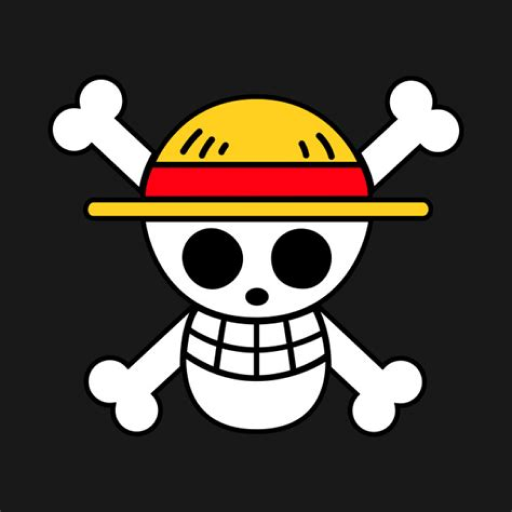

Straw Hat Pirate
Kelompok bajak laut topi jerami adalah sebuah kelompok bajak laut yang terbilang bervariasi karena anggota dan kaptennya berisikan orang-orang yang aneh. Monkey D. Luffy kapten bajak laut topi jerami bisa dibilang adalah karakter yang dibuat secara unik mulai dari kekuatannya maupun sifatnya. Luffy sendiri mempunyai kekuatan unik yang mampu untuk membuat orang-orang mengikutinya dan itupun menurut pengamatan sang pendekar pedang nomor 1 di One Piece, Dracule Mihawk.
Monkey D. Luffy
Harga bounty kapten bajak laut topi jerami setelah mengalahkan kapten bajak laut hewan buas Kaido di pulau Wano.
| Debut | Bounty | Hobi | Serangan |
|---|---|---|---|
| East Blue | 3 Miliar Berry | Makan daging | Pukulan dengan buah iblis karet |